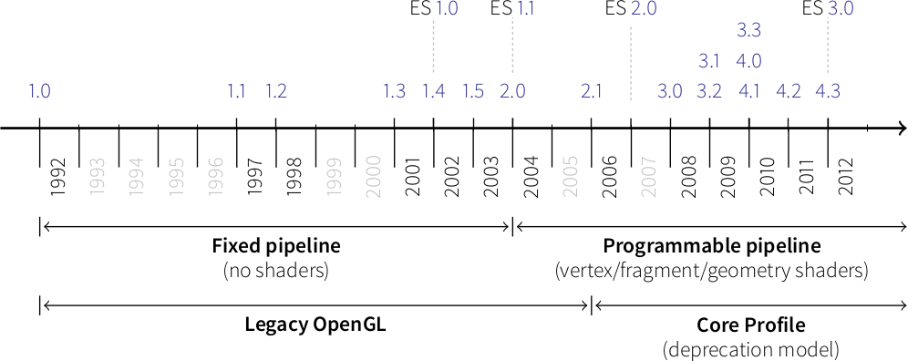

Modern OpenGL
OpenGL has evolved over the years and a big change occurred in 2003 with the
introduction of the dynamic pipeline (OpenGL 2.0), i.e. the use of shaders that
allow to have direct access to the GPU.

Before this version, OpenGL was using a fixed pipeline and you may still find a
lot of tutorials that still use this fixed pipeline. This introduces some
radical changes in the way of programming OpenGL and makes it both more
difficult to program but far more powerful.
Shaders
Note
The shader language is called glsl. There are many versions that goes from 1.0
to 1.5 and subsequents version get the number of OpenGL version. Last version
is 4.4 (February 2014).
Shaders are pieces of program (using a C-like language) that are build onto the
GPU and executed during the rendering pipeline. Depending on the nature of the
shaders (there are many types depending on the version of OpenGL you’re using),
they will act at different stage of the rendering pipeline. To simplify this
tutorial, we’ll use only vertex and fragment shader as shown below:

A vertex shader acts on vertices and is supposed to output the vertex
position (→ gl_Position) on the viewport (i.e. screen). A fragment shader
acts at the fragment level and is supposed to output the color
(→ gl_FragColor) of the fragment. Hence, a minimal vertex shader is:
void main()
{
gl_Position = vec4(0.0,0.0,0.0,1.0);
}
while a minimal fragment shader would be:
void main()
{
gl_FragColor = vec4(0.0,0.0,0.0,1.0);
}
These two shaders are not very useful since the first will transform any
vertex into the null vertex while the second will output the black color for
any fragment. We’ll see later how to make them to do more useful things.
One question remains: when are those shaders executed, exactly? The vertex
shader is executed for each vertex that is given to the rendering pipeline
(we’ll see what does that mean exactly later) and the fragment shader is
executed on each fragment that is generated after the vertex stage. For
example, in the simple figure above, the vertex would be called 3 times, once
for each vertex (1,2 and 3) while the fragment shader would be executed 21
times, once for each fragment (pixel).
Buffers
We explained earlier that the vertex shader act on the vertices. The question
is thus where do those vertices comes from? The idea of modern GL is that
vertices are stored on the GPU and needs to be uploaded (only once) to the GPU
before rendering. The way to do that is to build buffers onto the CPU and to
send them onto the GPU. If your data does not change, no need to upload it
again. That is the big difference with the previous fixed pipeline where data
were uploaded at each rendering call (only display lists were built into GPU
memory).
But what is the structure of a vertex? OpenGL does not assume anything about
your vertex structure and you’re free to use as many information you may need
for each vertex. The only condition is that all vertices from a buffer have the
same structure (possibly with different content). This again is a big
difference with the fixed pipeline where OpenGL was doing a lot of complex
rendering stuff for you (projections, lighting, normals, etc.) with an implicit
fixed vertex structure. Now you’re on your own…
- Good news is that you’re now free to do virtually anything you want.
- Bad news is that you have to program everything, even the most basic
things like projection and lighting.
Let’s take a simple example of a vertex structure where we want each vertex to
hold a position and a color. The easiest way to do that in python is to use a
structured array using the numpy library:
data = numpy.zeros(4, dtype = [ ("position", np.float32, 3),
("color", np.float32, 4)] )
We just created a CPU buffer with 4 vertices, each of them having a
position (3 floats for x,y,z coordinates) and a color (4 floats for
red, blue, green and alpha channels). Note that we explicitly chose to have 3
coordinates for position but we may have chosen to have only 2 if were to
work in two-dimensions only. Same holds true for color. We could have used
only 3 channels (r,g,b) if we did not want to use transparency. This would save
some bytes for each vertex. Of course, for 4 vertices, this does not really
matter but you have to realize it will matter if you data size grows up to
one or ten million vertices.
Learning modern OpenGL
There exist a lot of resources on the web related to OpenGL. I only mention
here a few of them that deals with the dynamic rendering pipeline. If you’ve
found other resources, make sure they deal with the dynamic rendering pipeline
and not the fixed one.
An intro to modern OpenGL
OpenGL has been around a long time, and from reading all the accumulated layers
of documentation out there on the Internet, it’s not always clear what parts
are historic and what parts are still useful and supported on modern graphics
hardware. It’s about time for a new OpenGL introduction that
walks through the parts that are still relevant today.
Learning Modern 3D Graphics Programming
This book is intended to teach you how
to be a graphics programmer. It is not aimed at any particular graphics field;
it is designed to cover most of the basics of 3D rendering. So if you want to
be a game developer, a CAD program designer, do some computer visualization, or
any number of things, this book can still be an asset for you. This does not
mean that it covers everything there is about 3D graphics. Hardly. It tries to
provide a sound foundation for your further exploration in whatever field of 3D
graphics you are interested in.
OpenGL ES 2.0 documentation
OpenGL ES 2.0 is defined relative to
the OpenGL 2.0 specification and emphasizes a programmable 3D graphics pipeline
with the ability to create shader and program objects and the ability to write
vertex and fragment shaders in the OpenGL ES Shading Language. VisPy is based
on OpenGL ES 2.0 because it give access to the programmable pipeline while
keeping overall complexity tractable.